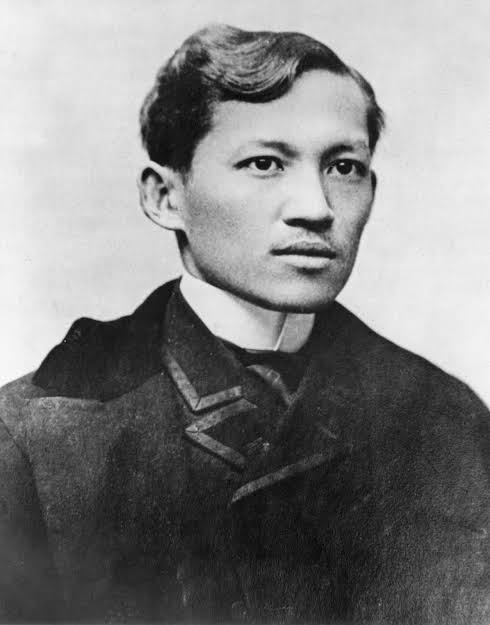
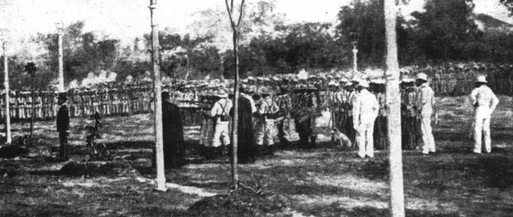
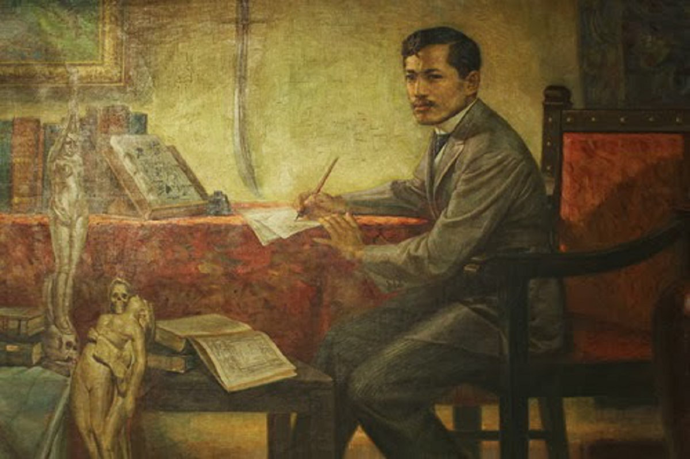
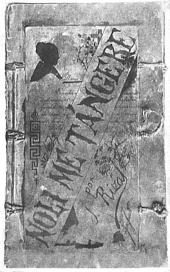
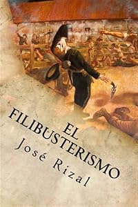

José Rizal was a Filipino hero, patriot, physician, writer, and reformer who inspired the Philippine nationalist movement. Born on June 19, 1861, in Calamba, he advocated peaceful political reform under Spanish rule through his writings. Executed in Manila on December 30, 1896, he became a national hero in the Philippines and an enduring symbol of Filipino nationalism.
José Protasio Rizal Mercado y Alonso Realonda
June 19, 1861 - at Calamba Laguna
December 30, 1896 - at Bagumbayan, Manila
Father - Francisco Mercado Rizal
A hero symbolizes goodness. Rizal gave us freedom by using goodness. Jose Rizal became the Philippine national hero because he fought for freedom in a silent but powerful way. He expressed his love for the Philippines through his novels, essays and articles rather than through the use of force or aggression. -Glory Mariz Bernus and Alyanna Hermoso

Rizal born in Calamba, Laguna
Rizal achieve his Bachelor of Arts degree, in Ateneo Municipal, with the highest grade
Sails secretly for Spain
Licentiate in Medicine, Universidad Central de Madrid
his notable works, Noli Me Tángere printed in Berlin
his second notable works, El filibusterismo printed in Ghent
Founds La Liga Filipina in Tondo
Arrives in Dapitan to begin four years of exile
Court-martialed and sentenced to death
Rizal Executed at Bagumbayan, at aged 35

Rizal's mother, Doña Teodora was his first teacher.
Doña Teodora was patient, conscientious, and understanding.
She also discovered that Rizal had a talent for poetry, and encouraged him to write poems.
Rizal's first private tutor.
Rizal's second private tutor.
A former classmate of Rizal's father, Don Francisco, who lived with the family and instructed young Jose in Spanish and Latin.
He tutored Rizal for about five months before passing away
Rizal went to Biñan on June 1869. He was accompanied by his older brother Paciano, and taught by Maestro Justiniano.
In academic studies, Rizal beat all Biñan boys. He surpassed them in Spanish, Latin, and other subjects.
Rizal entered Ateneo in 1872. He belonged to the class composed of Spaniards, mestizos, and Filipinos. However, he was considered as an inferior and was placed at the bottom of the class.
By the end of the month, he became the emperor and received a prize: a religious picture.
Rizal graduated on March 23, 1877, attaining sobresaliente or excellent with 5 medals. He received the degree of Bachelor of Arts.
He continued his education at UST and finished a year in Philosophy and Letters after deciding to shift to a medical course. He made the decision for him to be a physician and be able to treat his mother's failing eyesight. Fr. Pablo Ramon, the Father Rector of Ateneo whom he consulted recommended medicine.
He studied Cosmology, Metaphysics, Theodicy, and History of Philosophy.
While UST was under Dominicans, the rival of Jesuits that established Ateneo, Rizal remained loyal to Ateneo.
Out of the 28 young men taking Ampliacion only four including Rizal were granted the privilege of taking simultaneously the preparatory course and the first year of medicine.
Rizal also received his four year practical training in medicine at the Hospital de San Juan de Dios in Intramuros
During his last year at the University, Rizal had obtained the global grade of Notable (Very Good) in all of his subjects, and he was the second best student in a decimated class of seven who passed the medicine course. After which, Rizal decided to study in Spain.
His departure for Spain was kept secret from Spanish Authorities, friars and even his parents especially his mother because she would not allow him to go. To avoid detection, he used the name Jose Mercado.
The following academic year, he studied and passed all subjects leading to the degree of doctor of medicine. Unfortunately, he was not able to submit the thesis required for graduation nor paid the corresponding fees. With that, he was not awarded his Doctor's Diploma.
Rizal also finished his studies in Philosophy and Letters with higher grades. He was awarded the Degree of Licentiate in Philosophy and Letters by the Universidad Central de Madrid June 19, 1885 with the rating of excellent.
Jose Rizal went to Paris and Germany in order to specialize in ophthalmology. Among all branches, he chose this specialization because he wanted to cure his mother's failing eyesight.
On February 3, 1886, after gathering some experience in ophthalmology, he left Paris and went to Heidelberg, Germany.
He worked at the University Eye Hospital under the direction of Dr. Otto Becker, a distinguished German ophthalmologist.
On April 22, 1886, Rizal wrote a poem entitled A Las Flores de Heidelberg (To the Flowers of Heidelberg) because he was fascinated by the blooming flowers along the Neckar River, which was the light blue flower called “forget-me-not”.
On August 14, 1886, Rizal arrived in Leipzig. There, he attended some lectures at the University of Leipzig on history and psychology.
Jose Rizal earned a Licentiate in Medicine at the Universidad Central de Madrid, where he also took courses in philosophy and literature. It was in Madrid that he began writing Noli Me Tangere. He also attended classes in the University of Paris and, in 1887, he completed his eye specialization course at the University of Heidelberg. It was also in that year that Rizal's first novel was published in Berlin.

Noli Me Tangere (click anywhere to show characters)
Noli Me Tangere is José Rizal's first novel, printed in Berlin in March 1887, when he was 25.
It follows Crisóstomo Ibarra, a young Filipino who comes home from seven years in Europe,
tries to honor his dead father by building a school, and is destroyed by the friars and officials of his town.
The hero. Ibarra is the wealthy heir of Don Rafael Ibarra, and he comes home to San Diego after seven years of study in Europe, hoping to build a school and improve his town through education. He learns that his father died in prison after a quarrel with Padre Dámaso, and his reforms are crushed when he is framed for an uprising he never planned. He escapes, and he returns in El Filibusterismo as Simoun.
The heroine, and Ibarra's fiancée since childhood. She is raised as the daughter of Kapitan Tiago, but her real father is Padre Dámaso. To protect the secret of her birth, she gives up a letter that is used against Ibarra, and when she believes he is dead, she enters the convent of Santa Clara
A boatman and fugitive whose family was destroyed by the colonial system. Ibarra saves his life early in the novel, and Elías repays him several times over. The two men argue about whether the country can be changed through reform or only through force. Elías dies helping Ibarra escape, on Christmas Eve, hoping that others will live to see the dawn he never saw.
A Franciscan friar who served as the parish priest of San Diego for twenty years, and the novel's chief villain. He is loud, arrogant, and used to being obeyed. He persecuted Ibarra's father, insults him again at a banquet, and works to break Ibarra's engagement to María Clara, who is secretly his daughter. He is found dead in his bed in the Epilogue.
The new parish priest of San Diego, thin, quiet, and watchful, and in many ways more dangerous than Dámaso. He desires María Clara, and he quietly helps to engineer the uprising that ruins Ibarra. He returns in El Filibusterismo.
Don Santiago de los Santos, a rich merchant of Binondo and María Clara's father in name. He wants to be on good terms with every power, the friars, the government, and the saints alike, and he gives way to whoever pushes hardest. After María Clara enters the convent, he falls into opium addiction.
A poor, devoted mother with a cruel, absent husband. When her younger son disappears and her elder son flees, she loses her mind searching for them. She dies in Basilio's arms, after finally recognizing him.
Sisa's sons, both sacristans at the San Diego church. Crispín, the younger, is accused of stealing money and disappears in the convento, presumably beaten to death. Basilio, the elder, escapes and survives, and he returns as a medical student in El Filibusterismo.

El Filibusterismo (click anywhere to show characters)
El Filibusterismo is José's second novel and the sequel to Noli Me Tangere.
It was published in Ghent, Belgium, in 1891, five years before the Philippine Revolution.
Its hero is a rich jeweler named Simoun, who is really Crisóstomo Ibarra,
the young reformer of the first novel, returned under a false name to bring the colonial system down.
Presumed dead at the end of the Noli, he returns thirteen years later disguised as Simoun, a wealthy jeweler with dark glasses who is an advisor to the Captain-General. He plots a violent revolution to rescue María Clara and overthrow Spanish rule.
Sandoval's former boy, now a medical student close to graduating. He is the son of Sisa and brother of Crispin. He is dedicated and cautious, and he is later falsely imprisoned
A poet and student, idealistic and passionate. He is Paulita Gómez's sweetheart and the nephew of Padre Florentino. He is the one who throws Simoun's lamp into the river, stopping the bombing.
A retired priest, honorable and wise, who looks after the dying Simoun. He delivers the novel's moral conclusion: that freedom must be earned through suffering and virtue.
Isagani's beautiful but fickle sweetheart, who ends up marrying Juanito Pelaez.
A wealthy, opportunistic and sycophantic classmate who fawns over the friars.
His first published essay, “Amor Patrio,” was written soon after he arrived in Spain and printed in Manila's Diariong Tagalog in August 1882, under the pen name Laong Laan. It treats patriotism as a duty, not a sentiment
In this essay in four parts, Rizal looks back over three centuries of Spanish rule and then forward, warning that Spain must reform the colony or lose it. His forecasts of separation and revolution came true within a decade
Spanish writers liked to blame the colony's poverty on Filipino laziness. In this essay in five parts, Rizal answers the charge the way a physician treats a symptom, by asking what caused it. He traces the decline of Philippine trade and industry under colonial rule and argues that the indolence was an effect of bad government, not a cause.
In 1888, a group of young women in Malolos, Bulacan, asked the colonial government for a school where they could learn Spanish, and they met resistance. Rizal wrote to them from London in February 1889, praising their courage and urging Filipino women to educate themselves and to stop treating blind obedience as a virtue.
Antonio de Morga, a Spanish official, published his account of the Philippines in 1609. In 1888 and 1889, Rizal copied it by hand in the reading room of the British Museum in London and filled it with notes, corrections, and counterevidence. The annotated edition, printed in Paris in 1890, set out to show that Filipinos had a civilization of their own before Spain arrived.
Rizal retold the Philippine fable of the monkey and the turtle in English for Trübner's Oriental Record, a London scholarly journal, in July 1889. He had earlier drawn the story as a series of illustrated panels in Paris, in an album belonging to the family of his friend the painter Juan Luna. Those drawings, together with his illustrated Tagalog versions of Andersen's tales, are why he is often called the first Filipino cartoonist.
Rizal wrote “To the Filipino Youth” at 18 for a contest held by the Liceo Artístico-Literario, a literary society in Manila, and won first prize, a silver pen shaped like a feather. The poem calls on young Filipinos to use their talents, because they are the fair hope of the fatherland.
Rizal wrote “A las flores de Heidelberg” in the spring of 1886, while training as an eye doctor in Germany. He asks the flowers to carry his love home to the Philippines.
A long meditation on exile, written in Dapitan and sent to his mother in 1895. It describes his house by the sea and the peace he found there, along with the ache of distance. It is one of his most personal poems.
A song Rizal wrote for the boys at his school at Talisay, in Dapitan, celebrating work, study, and life beside the sea.
Rizal's farewell to his country, fourteen stanzas written in Fort Santiago before his execution on December 30, 1896. The poem was hidden in a small alcohol stove, and Rizal told his sister Trinidad, in English, “There is something inside.” The poem had no title. Mariano Ponce printed it in Hong Kong in 1897 as “Mi Último Pensamiento” (My Last Thought), and it became known as Mi Último Adiós after it was published in Manila in 1898 as “Último Adiós.”
Letada, Ranjade Abing
Bachelor of Science in Information Technology
Quezon City University
1st year & BAIT1A
The Life and Works of Rizal - FINALS
What I learned from these beautiful novels is how greed for power, influence, and vengeance can affect a person and the society around them. In Noli Me Tangere, the characters who symbolize greed for power are the friars and the Spanish officials, who were the cause of the protagonist’s struggles. The same in El Filibusterismo, where Simoun, who is Crisostomo Ibarra, was changed by corruption and abuse of power. It affected his conscience so much that he became greedy for revenge against those who wronged him. I also noticed that Noli Me Tangere was story of hope, because Crisostomo Ibarra believes that change is possible through peaceful means. This was also Dr. Jose Rizal's purpose in writing these novels, was to awaken his fellow Filipinos by peaceful means.
After studying Dr. Jose Rizal's novels, Noli Me Tangere and El Filibusterismo, I gained a beautiful perspective on what it truly means to be Filipino. This novels helped me understand why I should keep loving this country, even when I feel like giving up on it and accepting that it is hopeless. It also made me realize that no matter who you are, even an ordinary citizen can make a way for change, as long as you have the courage and the desire to achieve that freedom. I also realized that nothing will change if we just let things be and do nothing. Dr. Jose Rizal fought for his fellow countrymen without bloodshed, using only his courage, knowledge and his talent for writing.